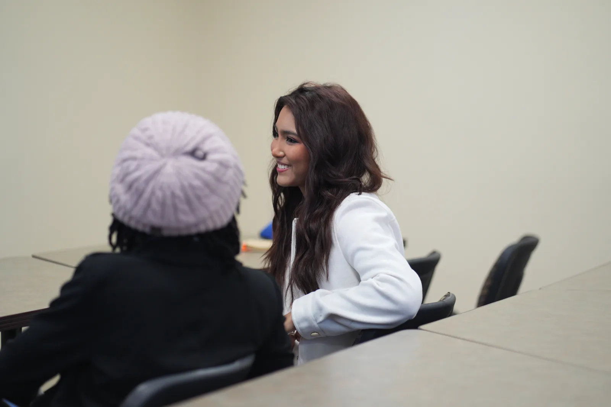
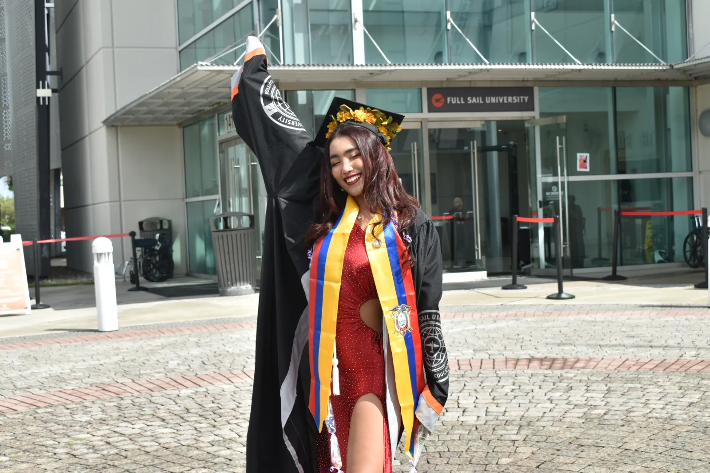
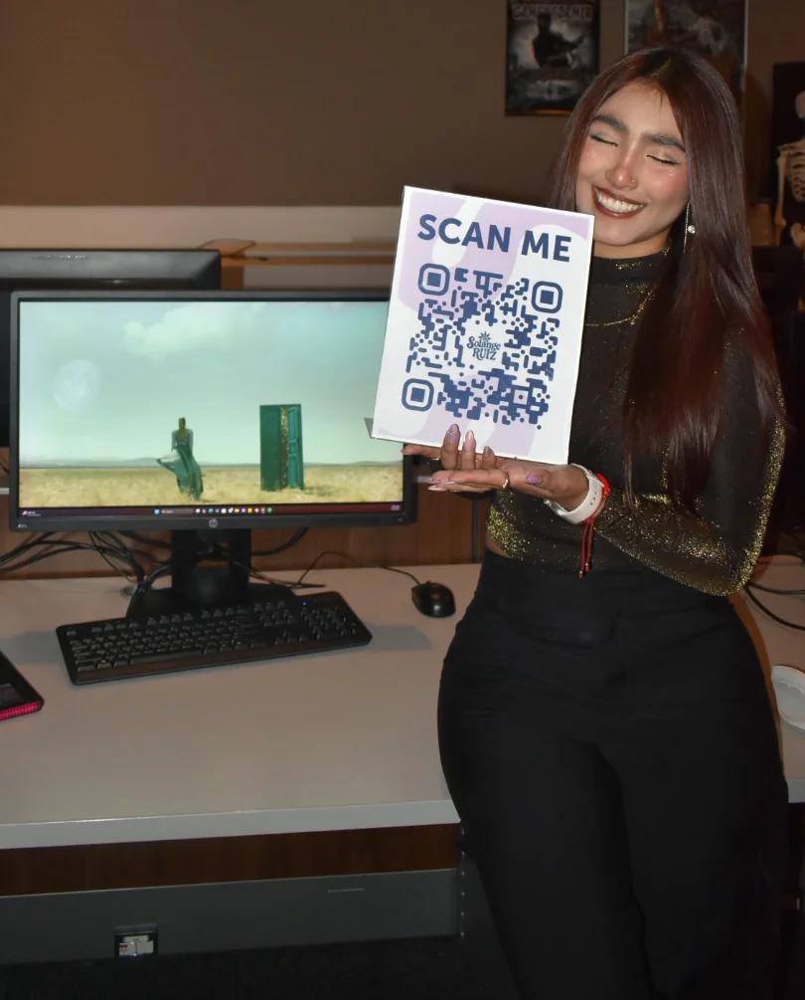
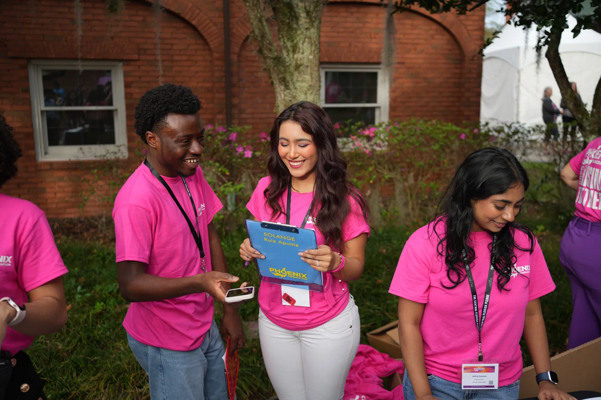

Creating spaces where people feel at home, and moments where magic exists.

I believe that behind every project there is a person, a story and a reason that matters. I lead with empathy and genuine connection, because the most meaningful work begins by truly listening: understanding what people need, what they feel and what they hope to experience.

My purpose is to create spaces where people feel at home, even when they are millions of miles away from it, or have never had one at all. Home, to me, is the feeling of being seen, understood and welcomed.

Life can easily become ordinary and repetitive. What guides me most is creating moments that break that routine, where people step outside the everyday and experience something that feels magical. Those are the moments people remember, and they are the reason I create.

I balance creative vision with strategic thinking, exploring ideas from different perspectives until I find solutions that are innovative, intentional and purposeful. I bring this to life through computer animation, video editing, visual effects and compositing, event production, and social media strategy. Whether I’m crafting a single shot or leading coverage of a large-scale event, my goal is to connect with people and leave a lasting impact.

Professionally, I bring authenticity, optimism and a deep commitment to excellence. I value collaboration and always advocate for what is best for the project and the people behind it.
See my work
Explore projects by area.


Got a project in mind? Let's talk.
Reach out about VFX, compositing, social media, or event coordination.